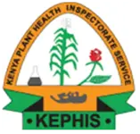
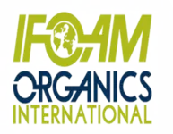

Exclusive distributor of Siesto Green in Kenya.
Bringing the world's first encapsulated bio-fertilizer and bio-pesticide technology to Kenyan farms.
Soil health first, always.
At JSolution Ltd., we empower Kenyan farmers with sustainable, cost-effective alternatives to conventional fertilizers. As the exclusive distributor of Siesto Green's Encapsulated Organic Fertilizers and Pesticides, we aim to improve soil fertility, crop productivity, and promote safer food production — enhancing farmers' livelihoods while protecting the environment from soil, air and water pollution.

Our Mission
To give every Kenyan farmer an affordable, organic route to healthier soil and higher-quality crops — replacing chemical dependency with living, capsule-based microbial technology.
Our Vision
A Kenyan agricultural sector where organic, encapsulated biofertilizers are the default choice — building soil that regenerates, food that's safer, and farming that's genuinely sustainable.
What is an encapsulated bio-fertilizer?
Biofertilizers are tiny capsules packed with beneficial microorganisms and essential nutrients. When added to soil, they enhance plant growth and crop yields. Our capsules represent the World's 1st Encapsulated Technology — a genuine pioneering step in agricultural input design.
Advantages of Bio Capsules
- Reduced chemical dependency
- Environmentally friendly
- High microbial content
- Easy handling & transport
- Improved soil structure
- Disease suppression
- Cost-effective
- 100% organic & water soluble
How a capsule becomes a full acre of nutrition
01 · Drop In
Drop 1 capsule into 1 litre of clean water.
02 · Activate
Leave for 3–4 hours until the capsule fully dissolves and bacteria activate.
03 · Dilute
Shake and empty into a 150–200L clean water tank for drip irrigation or drenching.
04 · Apply
Apply across 1 acre of land using your existing irrigation system.
Precautions for best results
- Never break the capsules into halves.
- Use chemical-free water for activation and irrigation.
- Use the activated solution within 12 hours through any supportive irrigation method.
- Never mix two different types of capsules in the same bottle for activation.
- Maintain a gap of at least 7 days between our product and synthetic fertilizer.
- Do not mix our biofertilizer with agrochemicals or synthetic fertilizers.
- Do not mix our biofertilizer capsules with other liquid or powder biofertilizers.
- Do not expose our bio-fertilizers to direct sunlight or heat.
- Clean sprayers and equipment before use — no chemical residue should remain.
Product, company & membership certifications


